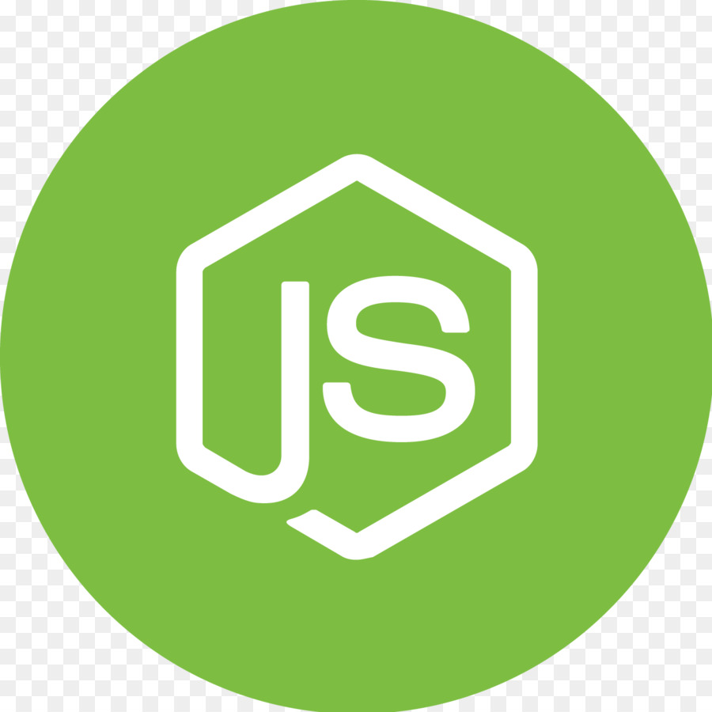
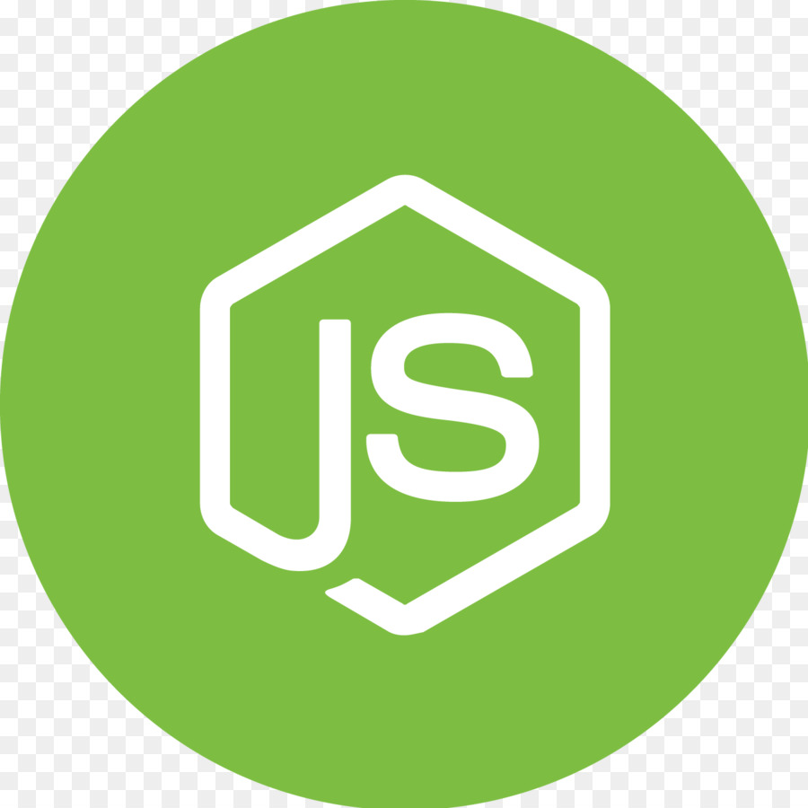

Conhecimentos


 


Biografia
Nasci em 11 de Abril de 2000, na acolhedora cidade de Mauá, São Paulo. Desde cedo, desenvolvi um interesse profundo por entender como as coisas funcionam, um traço que moldaria meu futuro de maneira significativa.
Meus primeiros passos no mundo da programação foram dados durante meu curso técnico em Mecatrônica em 2017. Lembro-me vividamente do fascínio que senti ao escrever minhas primeiras linhas de código. A sensação de poder criar algo do zero, de dar vida a ideias abstratas através da linguagem das máquinas, foi verdadeiramente reveladora para mim.
A partir desse momento, minha jornada se tornou clara: eu queria me tornar um profissional Full Stack. Ambicioso? Talvez. Mas sempre acreditei que desafios são oportunidades disfarçadas, e que a determinação aliada ao aprendizado contínuo pode superar qualquer obstáculo.
Ao longo dos anos, mergulhei de cabeça em projetos, cursos online e colaborações com colegas. Aprendi não apenas as linguagens de programação e frameworks mais populares, mas também desenvolvi habilidades em design de interfaces, gerenciamento de banco de dados e segurança da informação.
Minha jornada até aqui não foi isenta de desafios. Houve momentos de dúvida, frustração e a pandemia em 2019, mas cada obstáculo superado fortaleceu minha paixão e resiliência. Acredito firmemente que a persistência é a chave para o sucesso, e estou comprometido em continuar crescendo e evoluindo como profissional.